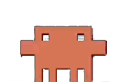

↻
News curation
Home ↗
Instagram ↗
Thread ↗
X ↗
Facebook ↗
메시지
메시지
✕
카드만
뉴스 요약
↑
원문 ↗
1. 기사 요약 · 시사점
이 요약에 질문
채팅 닫기
카드뉴스
3. 카드 뉴스
🚀 발사 PIN
유료 발사야(Gemini·Cloud Run). 4자리 암호 입력.
취소
카드 변경
✕
텍스트
— 탭=강조 · 더블탭=수정 · + 줄추가 · 비우면 줄삭제
이미지 수정 희망
취소
변경
이 카드만 다시 생성할까요?
취소
확인
뒤로
✨ 요약 요청
✕
이미지 첨부
요청 보내기 →
레거시
SNS
뉴스 요약
링크
제작 도구
✨ 요약 요청
썸네일 제작
릴스 자막
영상 프롬프트
지면 뉴스 ↗
피드 탐색
레거시 피드 ↗
X ↗
Thread ↗
인스타그램 ↗